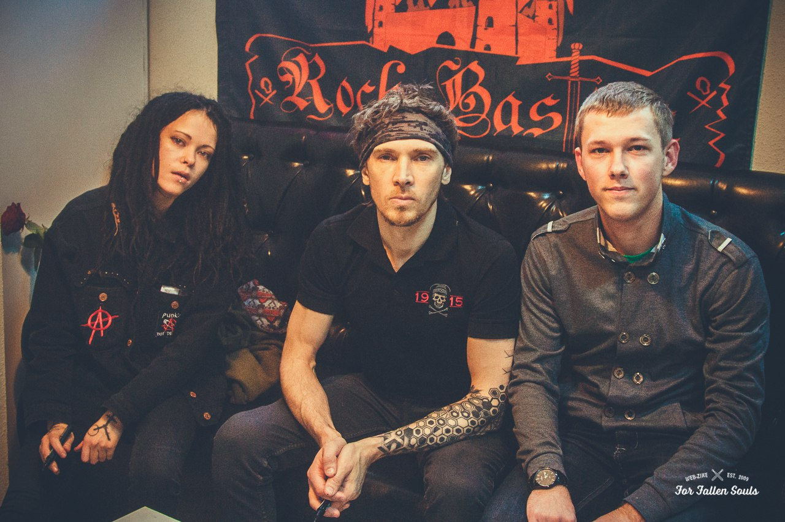

Resume for "Junior JS developer" position
Base information about me

- My name is Dzmitry Kim. I am 26 age old. I am from Belarus and now I am live in Minsk.
- If you want contact with me, use one or more ways below:
- Mobile phone: +375-29-355-90-27 (Velcom/A1);
- Mobile phone, Viber, Telegram: +375-33-632-57-92 (MTS);
- E-mails: d.kim2009@tut.by, d.kim2009k@gmail.com;
- Skype: reduserdemon;
- Discord: DzmitryKim#0080.
- Summary. At now I work in National Academy of Science of Belarus on engineer-programmer position. I have some experience in desktop and web development. I made some interfaces and some features for ANALYSIS OF RELIABILITY AND SURVIVABILITY OF ON-BOARD EQUIPMENT OF SMALL SATELLITES. Also I made some desktop programs used C++ Qt. At now I make blockchain network and chaincode based on Hyperledger Fabric and node JS. I sure after the course i can use JS better and more efficient and I can made more beautiful sites. The course is good experience for me to get best practices and also show my skills and my well ability to study new things.
Skills @ Code Examples
- Skills
- Programming languages:
- C++ / It's my main language;
- HTML+CSS+JS / The second stack that I use;
- C#, Java / A little bit.
- Frameworks:
- C++ Qt;
- JQuery, Ajax, CanvasXpress.
- Git control version system
- Programming languages:
- Code examples:
- C++ Qt code example:
void Scatter3D::parseData() { container->setVisible(false); loadProgress->setMaximum(file.count()*2); loadProgress->setValue(1); loadProgress->setVisible(true); label->setVisible(true); //----- file edit ----- while (file.last()=="") file.removeLast(); //----- end file edit ----- removeAllSeries(); //----- Get cluster count ----- int max_number = 0; cluster_items_count.clear(); maxCol = file[0].split('\t').count()-1; emit setSpin(8,2,maxCol,firstCol); emit setSpin(9,2,maxCol,secondCol); emit setSpin(10,2,maxCol,thirdCol); for (int i=0; i - js code example:
function repaintFeatureAll(){ canvasZero = null; $('#graphFrame').html(***); rtr(); document.getElementById('preloader').style.display = 'block'; var gen = $('#inp3Tool').val(); var dataCan = new Object(); var ann = []; dataCan.x = {}; for (i=popSize*(gen-1); i < popSize*gen;i++){ ann.push(i); } dataCan.x.Species = ann; dataCan.y = {}; ann = []; for(var i=0; i < dataFirst[0].length; i++){ ann.push('K'+i); } dataCan.y.vars = ann; ann = []; for (var i=popSize*(gen-1); i < popSize*gen; i++){ ann.push(i); } dataCan.y.smps = ann; ann = []; for (var i=0; i < dataFirst[0].length; i++) { setD = []; for (var j=popSize*(gen-1); j < popSize*gen; j++){ setD.push(dataFirst[j][i]); } ann.push(setD); } dataCan.y.data = ann; console.log(dataFirst); var conf = {"axisAlgorithm": "wilkinson", "axisMinMaxTickTickWidth": false, "codeType": "pretty", "graphOrientation": "vertical", "missingDataValue": "NA", "smpDendrogramNewick": false, "summaryType": "raw", "title": "Вся популяция (gen "+$('#inp3Tool').val()+")", "varDendrogramNewick": false, "smpLabelRotate": 90, "xAxis": [ "Важность" ], "xAxisTitle": "Важность"}; showCanvas(dataCan,conf,0); document.getElementById('preloader').style.display = 'none'; document.getElementById('statusDiv').innerHTML = '***'; }
- C++ Qt code example:
Experience & Education
- Experience. I have some experience in desktop and web development. I made some interfaces and some features for ANALYSIS OF RELIABILITY AND SURVIVABILITY OF ON-BOARD EQUIPMENT OF SMALL SATELLITES. Also I made some desktop programs used C++ Qt. At now I make blockchain network and chaincode based on Hyperledger Fabric and node JS.
- Education. From 2010 to 2015 years I studied in Belarus National Technique University on cathedra Intelligent systems. From 2017 to 2019 years I studied at magistracy.
- English. I have Elementary English level (A2) after Elementary course of Streamline English school. Now I study Pre-intermediate (A2+) course in Streamline English school.